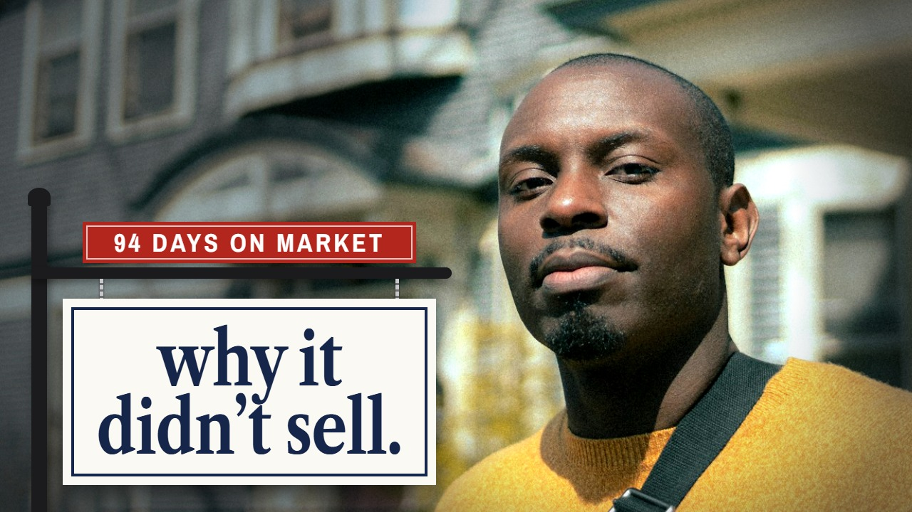
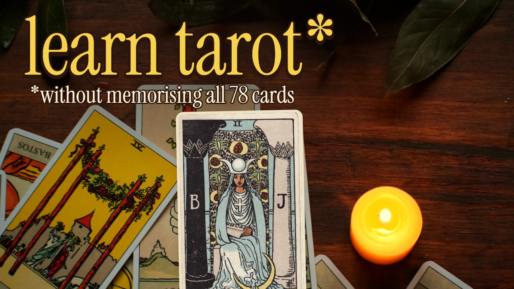
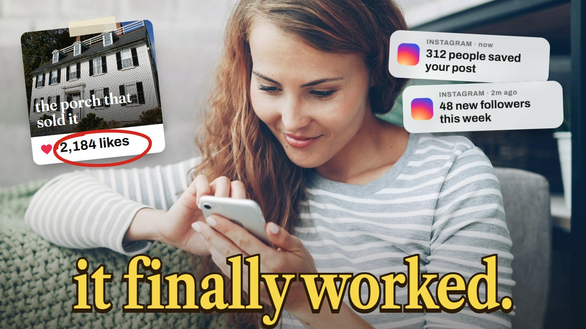
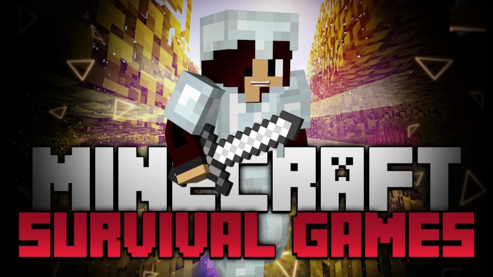
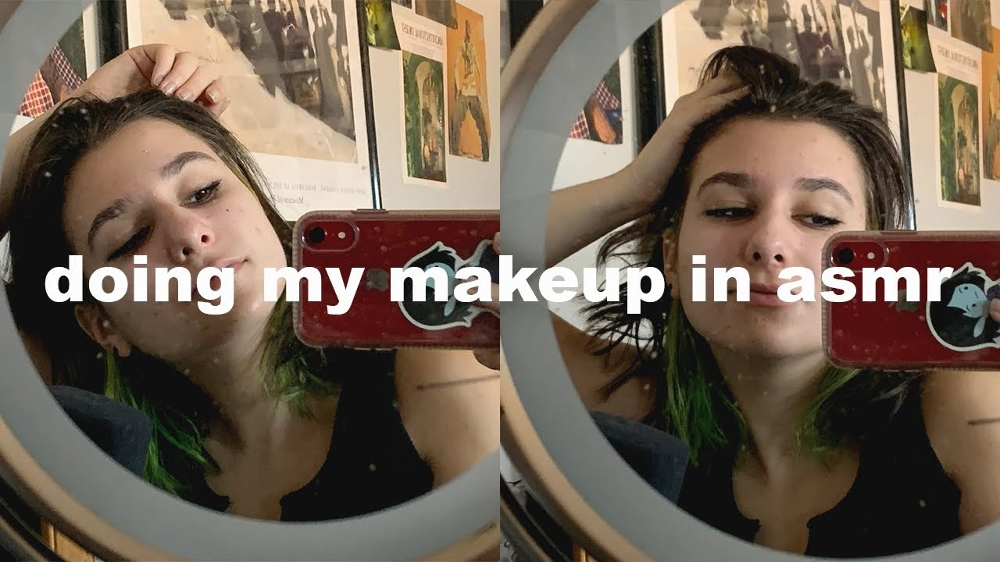
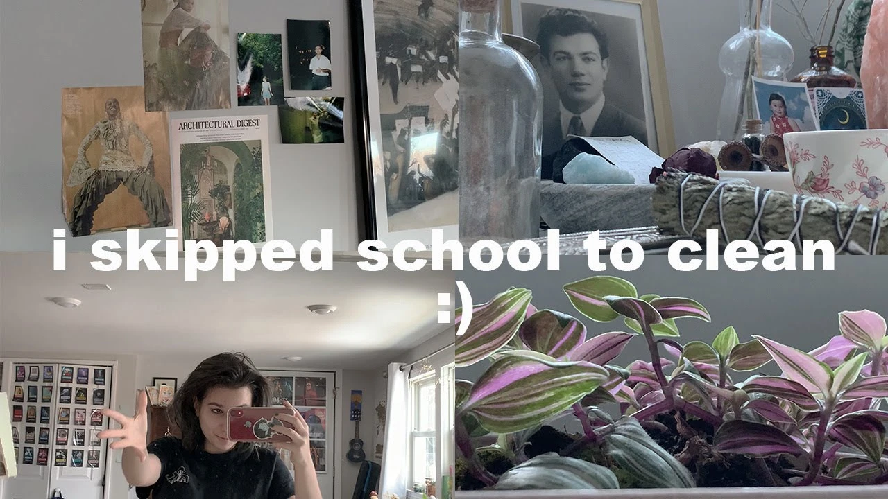

Three recent ones in an editorial collage style, for three different niches, and the thumbnails I made for my own channels growing up.
Recent work
Built to read at phone size: one face or one clear image, one line.

Real estateFor a video on a house that sat. His serious face sets the mood; the words live on a classic New England yard sign, so it reads as real estate at a glance. Photo: Unsplash.

TarotA beginner tutorial, built on the promise that wins in this niche: an easy way in. Photo: Unsplash; card: 1909 Rider-Waite deck (public domain).

Social media explainerThe happy version. She's smiling at her phone, so the story is the win. The post and numbers are made up for the sample. Photos: Unsplash.
Where I started
I've made my own YouTube thumbnails since I was a kid.

Gaming channel · as a kidMinecraft Survival Games. I rendered my character in Cinema 4D.

Lifestyle vlog · as a teenagerdoing my makeup in asmr

Lifestyle vlog · as a teenageri skipped school to clean :)